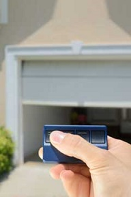

Troubleshooting garage door openers

One of the most underappreciated appliances in our lives is our garage door opener unit. It’s a fact; these openers work for us in all weather conditions, and at all hours of the night and day, year in and year out. They make it possible to come and go from our garages without ever having to leave the safety and convenience of our vehicles. This is not only a time saver; it is a safety feature, too. No more having to put the car in park, get out and lift our garage doors manually anymore. As you can imagine, this cuts down on car theft, muggings and home burglaries. Do you suddenly appreciate your garage door opener? You should; after all, they work hard to provide us with trouble free garage door access anytime we want or need it.
The troubles begin
Here in East Point GA we have all kinds of weather, ranging from our humid summers to very cold and wet winters - all the more reason to value the service that our residential or commercial garage door openers afford us. Often, especially during weather changes, our Complete Garage Door Repair shop gets calls for opener repair, new installation or service. Take note of our number and feel free to contact our shop anytime you need assistance with your opener unit. We service all major brands and offer same day service and 24-hour emergency help.
Keep your cool!
We know; it’s hard to remain cool-headed when you need to be somewhere and the garage door opener doesn’t work. A million scenarios start going through your head; how do you get the car out so that you can drive to work? Or, how much is THIS repair going to cost me? The best solution is to simply remain calm so that you can think clearly and find the right solution for this problem.
No power
Did you push the power button on the garage wall and nothing happened? One of the first places to check for power is here in your garage. Go over to the electric outlet in your garage ceiling and unplug the opener by pulling the cord out. You can now test your power supply by plugging something else into the outlet. Try a portable radio, shaver or power drill (or anything else that you have handy) and see what happens. If the power still works, it’s not your electric supply. If it doesn’t you’ll need to check your breaker box and see if one of them has been tripped. If it has; reset it and see if that was the problem.
Now what?
Are you ready for the next step? Now, we’ll see if your opener is locked up or not. Many of today’s openers have a locking mechanism located on the wall switch. Often, this button is called the vacation lock button. It is sometimes used when the car is left out in the driveway while the owner is away on vacation. Usually, the remote is still inside the car. By locking this button on the wall switch, your garage door won’t open by using the remote until it has been unlocked. It is meant as a safety precaution should someone get access to your remote while you are away. When activated or sometimes when bumped, the opener gets locked in the “off” position. Be sure to unlock it if you have one!
Opener still not working - check your eyes!
Your safety eyes, we mean! This is a great time to check on your photo electric safety eyes and see if they are aligned and that their signal is not blocked. Many garages here in East Point, GA are stuffed with lawn mowers, garden equipment, bicycles, leaf blowers, rakes, snow shovels, skateboards and work tools.
All it takes is one to fall over or move in the way of the signals and this can easily prevent your garage door from opening. A blocked signal is not all that can affect your safety eyes; sometimes the sensors get misaligned and that can have the same results. A quick check on your part can ensure that the eyes are aligned correctly and that nothing is in the way of the photoelectric signal.
More tips
One of the simplest tests you can do to check on your opener unit is to check the remote itself. Does the battery still work? While many confuse the remote control in your car as the actual opener, it is, in fact; not! Just like the remote to your television is not the actual TV; the same goes for your garage door opener. Simply open your remote unit and take out the battery. Do you have a battery tester at home? See if it is still good. Save yourself a professional service call by doing this fast and easy step! If you don’t have a tester, that’s no problem. Take the battery to any Home Depot, Wal-Mart or Target store and they will be happy to test it for you at no charge. Of course, they are hoping that if indeed you need one, that you’ll get it there.
When checking your safety eyes, be on the lookout to see if it is still connected to the power source and that the wiring is still intact. Sometimes, in a busy garage, it is easy for the wires to get frayed or cut. You can do this when you are checking on its alignment.
Don’t forget your owner’s manuals! Try and keep your owner’s manuals all in one place for easy and handy access anytime you need to refer to them. They contain useful and accurate information that you can refer to when trying to service any of your garage door appliances or hardware. They also contain websites and toll free numbers that can also provide useful data that either you can use, or the garage door repair technician that you call upon can!